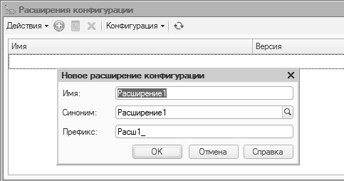

Данный механизм предлагает принципиально по новому производить адаптацию типовых решений под конкретные требования пользователей (производить доработку решений, поставляемых поставщиком).
Первоначально в конфигураторе (на самом деле расширения можно загружать и из режима "Предприятие") создается новое расширение конфигурации.

Если расширение зависит от существующих объектов конфигурации, то для контроля при его загрузке можно данные объекты включить в расширение.
Работать с расширением можно в отдельном окне (со своим деревом объектов конфигурации).
На текущий момент с помощью расширения можно:
· Изменять управляемые формы, существующие в типовой конфигурации;
· Добавлять новые подсистемы.
· Изменять состав подсистем, имеющихся в типовой конфигурации;
· Изменять роли типовой конфигурации, добавляя в них объекты, созданные в расширении;
· Изменять командный интерфейс типовой конфигурации (основного раздела, подсистем);
· Добавлять новые отчёты и обработки.
С помощью такого типа как "ХранилищеЗначения" можно организовать хранение в информационной базе "1С:Предприятие" "чего угодно". Важно понимать, что хранить в информационной базе следует "что-то", что нужно при решении задач учета, также следует обращать внимание на "место хранения" (идеальный вариант – регистр сведений) и размер сохраняемых данных.
Для демонстрации возможности работы с данным типом в справочнике "Физические лица" определим реквизит "Фотография" (как показано на рисунке).
Для отображения картинки, сохраненной в базе данных, определим реквизит формы "АдресКартинки" (тип "Строка"). После "переноса" реквизита в дерево элементов управления необходимо установить у него вид "Поле картинки".
Код обработчика события (вместе с серверной процедурой), ответственного за запись картинки из файловой системы клиента в базу данных, приведен ниже.
&НаКлиенте
Процедура Загрузить(Команда)
Перем Имя,Адрес;
Если ПоместитьФайл(Адрес,"",Имя,Истина,ЭтаФорма.УникальныйИдентификатор) Тогда
Объект.ИмяФайла=Имя;
АдресКартинки=Адрес;
КонецЕсли;
КонецПроцедуры
&НаСервере
Процедура ПередЗаписьюНаСервере(Отказ, ТекущийОбъект, ПараметрыЗаписи)
Если ЭтоАдресВременногоХранилища(АдресКартинки) Тогда
ДвоичныеДанные=ПолучитьИзВременногоХранилища(АдресКартинки);
ТекущийОбъект.Фотография=Новый ХранилищеЗначения(ДвоичныеДанные);
КонецЕсли;
КонецПроцедуры
Следует отметить, что в данном фрагменте кода используется так называемое "Временное хранилище".
Временное хранилище – это специализированное хранилище информации, в которое может быть помещено значение. Основное назначение – это временное хранение информации при клиент-серверном взаимодействии до ее переноса в базу данных.
Можно использовать временное хранилище как универсальное хранилище с контролируемым временем жизни данных. Продолжительность хранения зависит от продолжительности жизни формы, к которой данные отнесены. После удаления объекта формы в хранилище удаляются принадлежащие ей данные.
Код, "ответственный" за отображение картинки (при открытии формы), выглядит следующим образом:
&НаСервере
Процедура ПриСозданииНаСервере(Отказ, СтандартнаяОбработка)
АдресКартинки=ПолучитьНавигационнуюСсылку(Объект.Ссылка,"Фотография");
КонецПроцедуры
Следует отметить, что механизм навигационных ссылок доступен и в режиме исполнения.
Код, "ответственный" за выгрузку файла картинки из базы данных в файловую систему клиента, приведен ниже.
&НаКлиенте
Процедура Выгрузить(Команда)
АдресКартинки=ПолучитьНавигационнуюСсылку(Объект.Ссылка,"Фотография");
ПолучитьФайл(АдресКартинки,Объект.ИмяФайла,Истина);
КонецПроцедуры
Проверьте механизм на практике.
Область применения:
· Когда сложно сформулировать точные условия поиска
· Неизвестно, что искать.
· Неизвестно, где искать, когда традиционные методы не работают.
· Поиск в больших текстовых полях.
· Поиск в "хранилище значения".
· Поиск на естественном языке.
Механизм полнотекстового поиска в данных системы "1С:Предприятие 8" позволяет осуществлять поиск в базе данных с указанием поисковых операторов: И, ИЛИ, НЕ, РЯДОМ. Можно использовать:
· /дистанция по номерам слов (Иванов/2 Иванович)
· (только в конце слова)
· "" (точное соответствие выражению)
· () (группировка слов, сколько угодно уровней вложенности)
· #Число (нечеткий поиск, с указанием отличий)
· ! (Поиск с учетом синонимов русского, английского и украинского языков.)
Механизм полнотекстового поиска основан на использовании трех составляющих:
· Полнотекстового индекса, который создается (как интерактивно, так и программно) и затем по мере необходимости обновляется.
· Журнал полнотекстового поиска.
· Средств выполнения полнотекстового поиска (поиск можно организовать только программным способом).
Для включения/исключения данных объекта (наборов записей) из механизма построения индекса используется соответствующее свойство объекта конфигурации (реквизита, реквизита табличной части):
Перед использованием данного механизма необходимо удостовериться, что он включен в платформе. Выполнить это проверку (и при необходимости включить механизм) можно через пункт главного меню программы "Все функции".
Открывается окно следующего вида:
В управлении полнотекстового поиска также можно проводить обновление индекса, но это можно сделать и из встроенного языка:
Процедура
ОбновитьИндексНажатие(Элемент)
Пока Не
ПолнотекстовыйПоиск.ИндексАктуален() Цикл
ПолнотекстовыйПоиск.ОбновитьИндекс(Ложь,
Истина);
КонецЦикла;
КонецПроцедуры
В интерфейсе "Такси" реализована системная форма для выполнения полнотекстового поиска (данная форма может быть переопределена, для этого в свойствах корневого объекта дерева объектов конфигурации существует специальное свойство).
Регламентные задания позволяют организовать запуск каких-либо процедур (определяется на этапе конфигурирования) по расписанию. В случае аварийного завершения возможен перезапуск процедуры (через указанный интервал, указанное количество раз).
Для создания регламентного задания нужно в ветви "Общие" дерева объектов конфигурации сделать текущей ветвь "Регламентные задания" и создать экземпляр объекта.
Свойства создаваемого объекта приведены на рисунке ниже:
В процедуре, которая используется как метод регламентного задания, производится обновление индекса полнотекстового поиска:
Процедура
ОбновлениеИндексаППД() Экспорт
Если
ПолнотекстовыйПоиск.ПолучитьРежимПолнотекстовогоПоиска() =
РежимПолнотекстовогоПоиска.Разрешить
Тогда
Если Не
ПолнотекстовыйПоиск.ИндексАктуален() Тогда
ПолнотекстовыйПоиск.ОбновитьИндекс(Ложь,
Истина);
КонецЕсли;
КонецЕсли;
КонецПроцедуры
Нажав на гиперссылку "Открыть", переходим в диалог редактирования расписания.
Следует иметь в виду, что использование механизма заданий в файловом варианте имеет некоторые особенности (наиболее "комфортно" он работает в клиент-серверном варианте функционирования платформы).
История данных ‑ специальный механизм, который позволяет хранить в базе данных данные объектов конфигурации, упорядоченные по шкале времени. В качестве равноправного термина также будет использоваться термин версионирование данных. В базе данных хранится версия ‑ данные, которые были в объекте на момент изменения, а также состояние метаданных на момент изменения. Механизм позволяет настраивать хранение истории данных для объекта целиком и более тонко управлять работой механизма для каждого реквизита (включая табличные части). Управлять включением и выключением истории можно как из конфигуратора, так и с помощью встроенного языка. Таким образом, становится возможным включать хранение истории изменений только для тех данных, которые нужны конкретным пользователям, без необходимости изменения конфигурации.
Процесс создания версии состоит из двух шагов. Вначале система фиксирует сам факт изменения того или иного объекта. Это происходит или автоматически или с помощью вызова метода программного интерфейса. Информация об изменении объекта попадает в специальную очередь. Перенос данных из очереди в таблицы базы данных выполняется с помощью специального метода программного интерфейса (ИсторияДанных.ОбновитьИсторию()). Обновление истории данных можно выполнять асинхронно, например, с помощью регламентного задания (по аналогии с обновлением индекса полнотекстового поиска).
Работу с историей данных посмотрим на примере обработки «История данных».
Код обработки следующий:
&НаСервере
Процедура
ОбновлениеИсторииНаСервере()
ИсторияДанных.ОбновитьИсторию();
КонецПроцедуры
&НаКлиенте
Процедура
ОбновлениеИстории(Команда)
ОбновлениеИсторииНаСервере();
КонецПроцедуры
&НаСервере
Процедура
ВключениеНастроекНаСервере()
Настройки = Новый
НастройкиИсторииДанных;
Настройки.Использование =
Истина;
Настройки.ИспользованиеПолей.Вставить("ИНН",
Истина);
Настройки.ИспользованиеПолей.Вставить("КПП",
Истина);
ИсторияДанных.УстановитьНастройки(Метаданные.Справочники.Контрагент,Настройки);
КонецПроцедуры
&НаКлиенте
Процедура
ВключениеНастроек(Команда)
ВключениеНастроекНаСервере();
КонецПроцедуры
&НаСервере
Процедура
ПолучитьВерсииНаСервере()
Отбор = Новый Структура;
Отбор.Вставить("Данные",
Справочники.Контрагент.НайтиПоНаименованию("Первый"));
Версии =
ИсторияДанных.ВыбратьВерсии(Отбор);
КонецПроцедуры
&НаКлиенте
Процедура
ПолучитьВерсии(Команда)
ПолучитьВерсииНаСервере();
КонецПроцедуры
&НаСервере
Процедура
ОтключениеВерсийНаСервере()
ИсторияДанных.УстановитьНастройки(Метаданные.Справочники.Контрагент,Неопределено);
КонецПроцедуры
&НаКлиенте
Процедура
ОтключениеВерсий(Команда)
ОтключениеВерсийНаСервере();
КонецПроцедуры
&НаСервере
Процедура
ПроверкаНаСервере()
Настр=ИсторияДанных.ПолучитьНастройки(Метаданные.Справочники.Контрагент);
Если Настр=Неопределено Тогда
Сообщить("Версионирование
по контрагентам отключено");
КОнецЕсли;
КонецПроцедуры
&НаКлиенте
Процедура
Проверка(Команда)
ПроверкаНаСервере()
КонецПроцедуры
&НаСервере
Процедура
УдалитьВерсииНаСервере()
ИсторияДанных.УдалитьВерсии(Метаданные.Справочники.Контрагент);
КонецПроцедуры
&НаКлиенте
Процедура
УдалитьВерсии(Команда)
УдалитьВерсииНаСервере();
КонецПроцедуры
Бизнес-процессы в "1С:Предприятии 8" предназначены для объединения отдельных операций в цепочки взаимосвязанных действий, приводящих к достижению конкретной цели. Они дают возможность перейти к процессному управлению деятельности компании. Все возможные состояния бизнес-процесса и переходы между ними представляются с помощью карты маршрута бизнес-процесса. Карта маршрута описывает логику бизнес-процесса и весь его жизненный цикл от точки старта до точки завершения, в виде схематического изображения последовательности прохождения взаимосвязанных точек маршрута.
Задачи в "1С:Предприятии 8" позволяют вести учет заданий по исполнителям и служат отражением продвижения бизнес-процессов по точкам маршрута. При этом задачи могут создаваться не только бизнес-процессами, но и другими объектами информационной базы, и непосредственно пользователями.
Бизнес-процессы в "1С:Предприятии" допускают следующие виды маршрутизации:
· Жесткая. Бизнес-процесс имеет строгую карту маршрута, не включающую в себя условных и параллельных переходов, с жестко определенными адресатами для каждой точки маршрута. Данный вид не допускает свободной и условной маршрутизации.
· Свободная. Адресаты точки карты маршрута бизнес-процесса не установлены и определяются программно или интерактивно в течение жизненного цикла бизнес-процесса.
· Условная. Карта маршрута предусматривает проверку условий и переход по соответствующим ветвям. Переходы могут быть как бинарными (условие), так и множественными (выбор варианта).
· Параллельная. Карта маршрута предусматривает разделение бизнес-процесса на параллельные ветви с возможностью последующего слияния (ожидания). Продвижение бизнес-процесса по каждой из параллельных ветвей происходит независимо по мере выполнения соответствующих задач.
Как правило, в реальных картах бизнес-процессов встречаются все эти типы маршрутизации.
Другим важным понятием является "Адресация". Основное назначение системы адресации - обеспечить возможность не только персональной, но и ролевой адресации задач участникам бизнес-процессов.
Для хранения данных об адресации используется регистр сведений.
Для отображения текущего состояния бизнес-процесса может использоваться следующий фрагмент кода:
&НаКлиенте
Процедура ОбновитьКарту(Команда)
ОбновитьКартуСервер();
КонецПроцедуры
&НаСервере
Процедура ОбновитьКартуСервер()
КартаМаршрута = Объект.Ссылка.ПолучитьОбъект().ПолучитьКартуМаршрута();
КонецПроцедуры
Предполагается, что этот код размещается в модуле формы бинес-процесса.